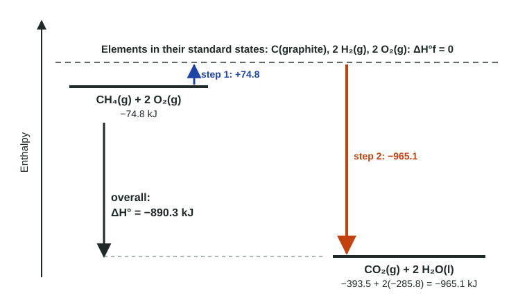

Enthalpy of Formation
A standard enthalpy of formation is ΔH for making 1 mol of a compound from its elements in their standard states; elements in their standard states have ΔH°f = 0.
Part 1 · Hook
Why this matters
Part 2 · Before you start
What this builds on
Part 3 · Prerequisite check
Quick check before you start
1. Reversing a thermochemical equation
- changes the sign of ΔH
- doubles ΔH
- leaves ΔH unchanged
- makes ΔH zero
Show the answer
The energy flows the other way, so ΔH has the same size and opposite sign.
- Correct: changes the sign of ΔH:
- doubles ΔH:
- leaves ΔH unchanged:
- makes ΔH zero:
2. Which is an element?
- O₂
- H₂O
- CO₂
- NH₃
Show the answer
O₂ contains only oxygen atoms.
- Correct: O₂:
- H₂O:
- CO₂:
- NH₃:
Part 4 · See it
See it first

Part 5 · Step by step
How it works, step by step
- ΔH°f is the enthalpy change to make 1 mol of a compound from its elements in their standard stateseach compound gets one tabulated number; elements in their standard states get zero
- A reaction can be imagined as reactants → elements → productstaking reactants apart costs −Σ ΔH°f(reactants); building products costs +Σ ΔH°f(products)
- The route does not change the overall enthalpy changeΔH°rxn = Σ n ΔH°f(products) − Σ n ΔH°f(reactants)
- ΔH°f values are measured for each substance and statethe result is more exact than a bond-enthalpy estimate
Part 6 · Key ideas
Key ideas
- The standard enthalpy of formation, ΔH°f, is ΔH for making 1 mol of a compound from its elements in their standard states (most stable form at 1 atm, usually 25 °C).
- ΔH°f = 0 for an element in its standard state: O₂(g), H₂(g), C(graphite), Br₂(l), Fe(s).
- ΔH°rxn = Σ n ΔH°f(products) − Σ n ΔH°f(reactants): products minus reactants, each times its coefficient.
- States matter: H₂O(l) −285.8 and H₂O(g) −241.8 kJ/mol.
- Bond enthalpies: broken − formed. Formation: products − reactants. Do not mix them up.
Part 7 · Misconception
A common mistake
The wrong idea: Every pure substance made of one element, like O₃ or O atoms, has ΔH°f = 0.
What actually happens: Only the standard state, the most stable form at 1 atm and 25 °C, has ΔH°f = 0. O₂(g) is zero; O₃(g) and O(g) are positive.
Part 8 · Check yourself
Check yourself
Exam-style questions. Anything you miss goes into your review queue.
Data table
Standard enthalpies of formation at 25 °C
Use these values for every item in this set.
| Substance | ΔH°f (kJ/mol) | Substance | ΔH°f (kJ/mol) |
|---|---|---|---|
| C₂H₅OH(l) | −277.7 | NH₃(g) | −46.1 |
| CO₂(g) | −393.5 | NO(g) | +90.3 |
| H₂O(l) | −285.8 | NO₂(g) | +33.2 |
| H₂O(g) | −241.8 | Fe₂O₃(s) | −824.2 |
| CO(g) | −110.5 | Al₂O₃(s) | −1675.7 |
1. Calculate ΔH° for the combustion of ethanol: C₂H₅OH(l) + 3 O₂(g) → 2 CO₂(g) + 3 H₂O(l).
Type a number and its unit.
Show the answer
ΔH° = Σ ΔH°f(products) − Σ ΔH°f(reactants) = [2(−393.5) + 3(−285.8)] − [(−277.7) + 3(0)] = (−787.0 − 857.4) + 277.7 = −1366.7 kJ/mol. O₂ is an element in its standard state, so its ΔH°f is 0.
- Answer: -1366.7 kJ/mol
2. Calculate ΔH°, in kJ/mol, for 4 NH₃(g) + 5 O₂(g) → 4 NO(g) + 6 H₂O(g), the first step of making nitric acid.
Type a number and its unit.
Show the answer
ΔH° = [4(+90.3) + 6(−241.8)] − [4(−46.1) + 5(0)] = (361.2 − 1450.8) − (−184.4) = −905.2 kJ/mol.
- Answer: -905.2 kJ/mol
3. The thermite reaction is 2 Al(s) + Fe₂O₃(s) → Al₂O₃(s) + 2 Fe(s). Calculate ΔH°, in kJ/mol.
Type a number and its unit.
Show the answer
Al(s) and Fe(s) are elements in their standard states (ΔH°f = 0). ΔH° = [(−1675.7) + 2(0)] − [2(0) + (−824.2)] = −851.5 kJ/mol.
- Answer: -851.5 kJ/mol
4. Which equation has ΔH° equal to the standard enthalpy of formation of NO₂(g), +33.2 kJ/mol?
- N₂(g) + 2 O₂(g) → 2 NO₂(g)
- NO(g) + ½ O₂(g) → NO₂(g)
- N(g) + 2 O(g) → NO₂(g)
- ½ N₂(g) + O₂(g) → NO₂(g)
Show the answer
A formation reaction makes exactly 1 mol of the compound from its elements in their standard states, using fractions if needed.
- N₂(g) + 2 O₂(g) → 2 NO₂(g): This makes 2 mol of NO₂, so its ΔH° is 2 × 33.2 = 66.4 kJ/mol.
- NO(g) + ½ O₂(g) → NO₂(g): NO is a compound, not an element; a formation reaction starts from elements only.
- N(g) + 2 O(g) → NO₂(g): Nitrogen and oxygen atoms are not the standard states; the elements are N₂(g) and O₂(g).
- Correct: ½ N₂(g) + O₂(g) → NO₂(g): Right: one mole of NO₂ made from its elements, each in its standard state.
Particle view
Forms of two elements
Key: red circle, oxygen atom; dark circle, carbon atom; touching circles or a line, bonded atoms. All four boxes are at 25 °C and 1 atm.
5. Which box shows an element in its standard state, so its ΔH°f is zero?
- Box 1, separate oxygen atoms
- Box 2, O₂ molecules
- Box 4, O₃ molecules
- Box 3 and Box 4 together
Show the answer
The standard state of an element is its most stable form at 1 atm and the stated temperature (usually 25 °C). For oxygen that is O₂(g); for carbon, graphite.
- Box 1, separate oxygen atoms: Single O atoms are far less stable than O₂; making them from O₂ absorbs energy, so their ΔH°f is positive.
- Correct: Box 2, O₂ molecules: Right: oxygen's most stable form at 25 °C and 1 atm is O₂ gas.
- Box 4, O₃ molecules: Ozone is a less stable form of oxygen; its ΔH°f is positive (about +143 kJ/mol).
- Box 3 and Box 4 together: Box 3 is a standard state (graphite), but Box 4, ozone, is not.
6. Which boxes show substances with ΔH°f = 0? Select all that apply.
- Box 1
- Box 2
- Box 3
- Box 4
Show the answer
ΔH°f = 0 belongs to elements in their standard states: O₂(g) and C(graphite) here.
- Box 1: Separate O atoms are not oxygen's standard state.
- Correct: Box 2: O₂(g) is oxygen's standard state.
- Correct: Box 3: Graphite is carbon's standard state, so its ΔH°f is 0.
- Box 4: O₃(g) is not the most stable form of oxygen; its ΔH°f is positive.
7. Use ΔH°f values (C₆H₁₂O₆(s) −1273.3, CO₂(g) −393.5, H₂O(l) −285.8 kJ/mol) to calculate ΔH° for C₆H₁₂O₆(s) + 6 O₂(g) → 6 CO₂(g) + 6 H₂O(l).
Type a number and its unit.
Show the answer
ΔH° = [6(−393.5) + 6(−285.8)] − [(−1273.3) + 6(0)] = (−2361.0 − 1714.8) + 1273.3 = −2802.5 kJ/mol.
- Answer: -2802.5 kJ/mol
Part 9 · Summary
Summary
Part 10 · Up next
What comes next
Part 11 · Connections